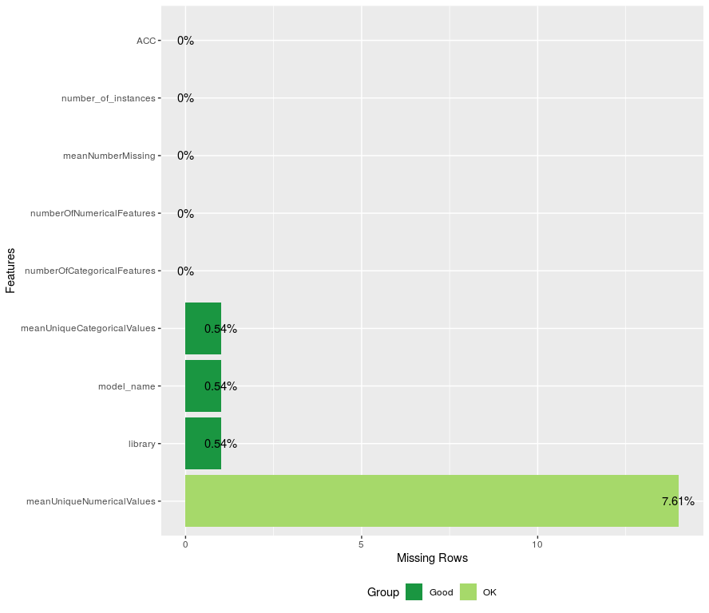
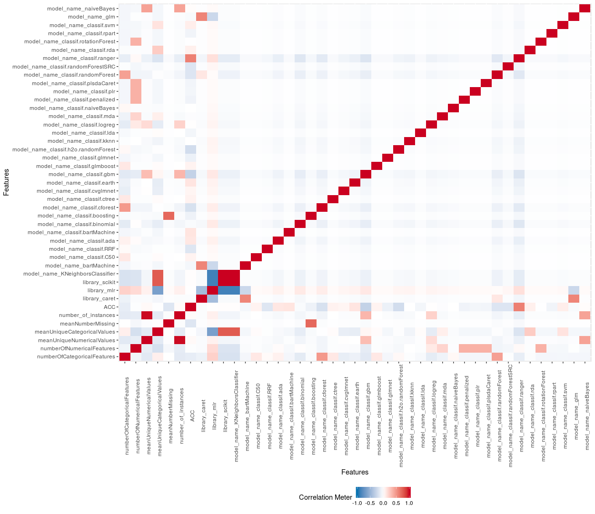
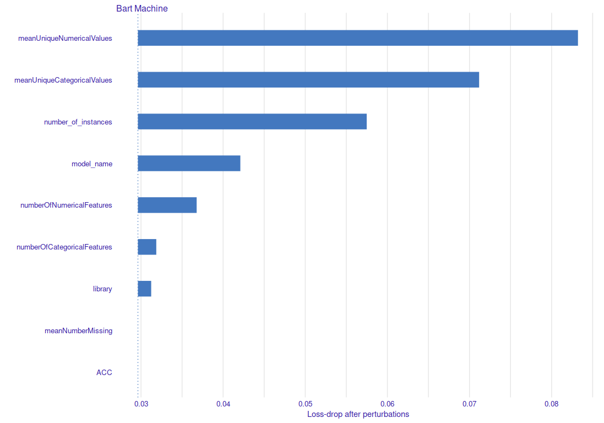

0.1 Analiza zbioru
## [1] "library" "model_name"
## [3] "numberOfCategoricalFeatures" "numberOfNumericalFeatures"
## [5] "meanUniqueNumericalValues" "meanUniqueCategoricalValues"
## [7] "meanNumberMissing" "number_of_instances"
## [9] "ACC"
0.2 Analiza zbioru

0.3 Variable impact

0.4 Ocena jakości
regr_task = makeRegrTask(id = "task", data = df, target = "ACC")
regr_lrn = makeLearner("regr.bartMachine")
| Metric | Score |
|---|---|
| mse.test.mean | 0.0016731 |
| rmse.test.rmse | 0.0409037 |
| mae.test.mean | 0.0252164 |
| rsq.test.mean | 0.8596590 |
0.5 Podsumowanie
Trudne rzeczy:
omijanie błędów w bazie modeli, ew. ich poprawki.
wybranie zmiennych opisujących zbiór danych, w szczególności stworzenie takich cech, które istniałyby dla (prawie) wszystkich
dataset.jsonodrzucanie obserwacji (gdy robi się ich dużo mniej)
weryfikacja wyników?